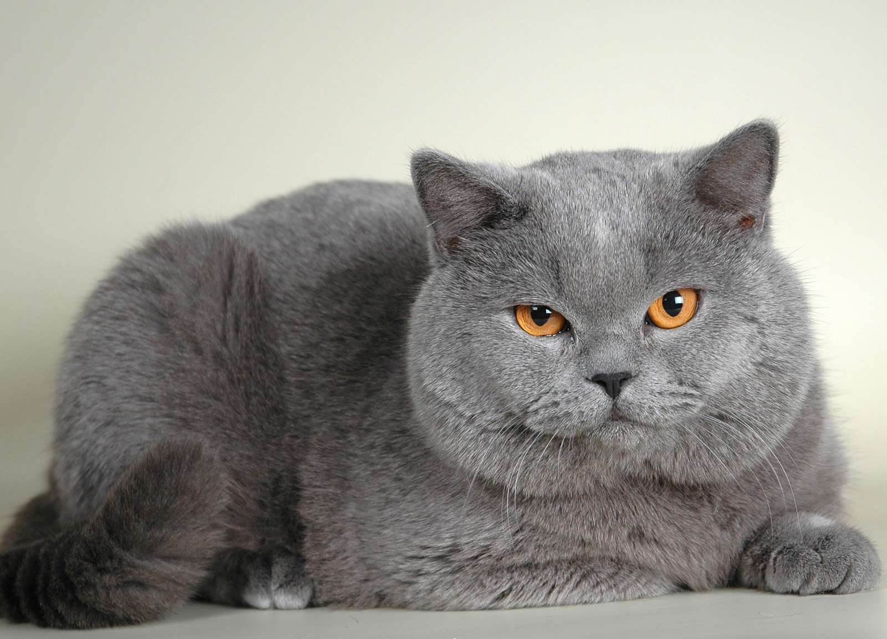
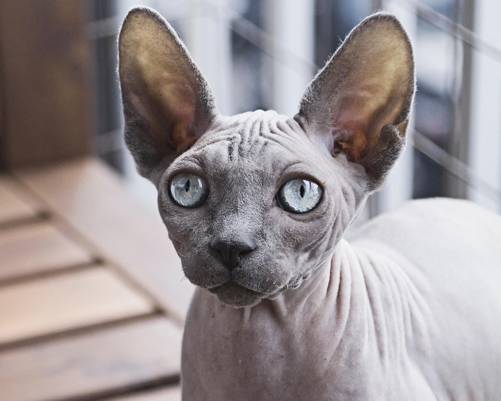

Сучасні коти світу
Кіт сві́йський, або кі́шка сві́йська — невеликий ссавець ряду хижих родини котових. Сучасна назва походить в
ід латинської назви catus, що використовується для свійського кота, на відміну від дикого, який латиною називаєтся felis.
Цікаві факти про котів
-
Тривалість життя: 12 – 18 років (одомашнені)
-
Період вагітності: 65 днів
-
Маса: 4 – 5 кг (дорослі особини, свійські)
-
Денний сон: 12 – 16 годин
-
Довжина: 46 см (без хвоста)
Популярні породи котів
-
Британська короткошерста

-
Сіамська порода

-
Бенгальська кішка

-
Регдол

-
Сфінкс

Якже обійтись без секрету гугла 😼
Силка на мій акаунт в ютубі
Силка на мій акаунт в GitHub
Силка на скачування visual studio code